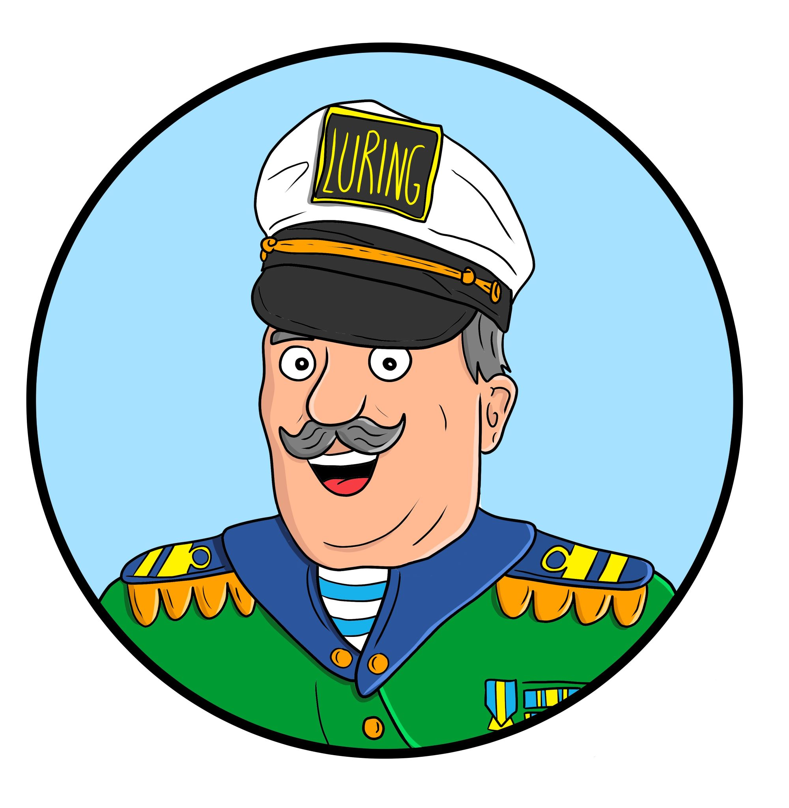

Samla stämplar med Västerås Stadsbibliotek!
Jakten på sanning -
hjälp oss att avslöja kapten Luring!

Illustration Fredrik Pärn Eklöv
Kapten Luring har spridit lögner och vi behöver din hjälp för att avslöja dom.
Du kommer att få uppdrag som du ska lösa. Om du lyckas lösa ett uppdrag får du en stämpel. Om du samlar minst 5 stämplar får du en bok.
Ett av uppdragen hittar du vid biblioteksbussen som står på Stora torget. De andra uppdragen finns inne på huvudbiblioteket. Du kan utföra uppdragen i vilken ordning du själv vill.
Är du redo?